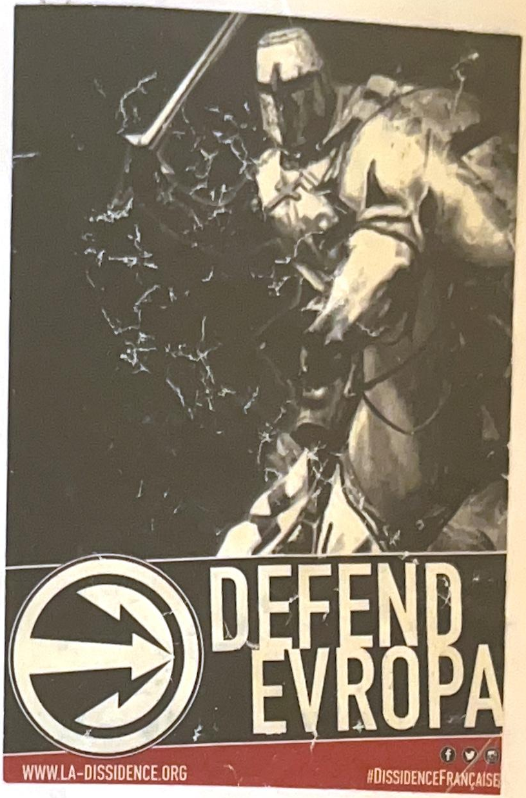
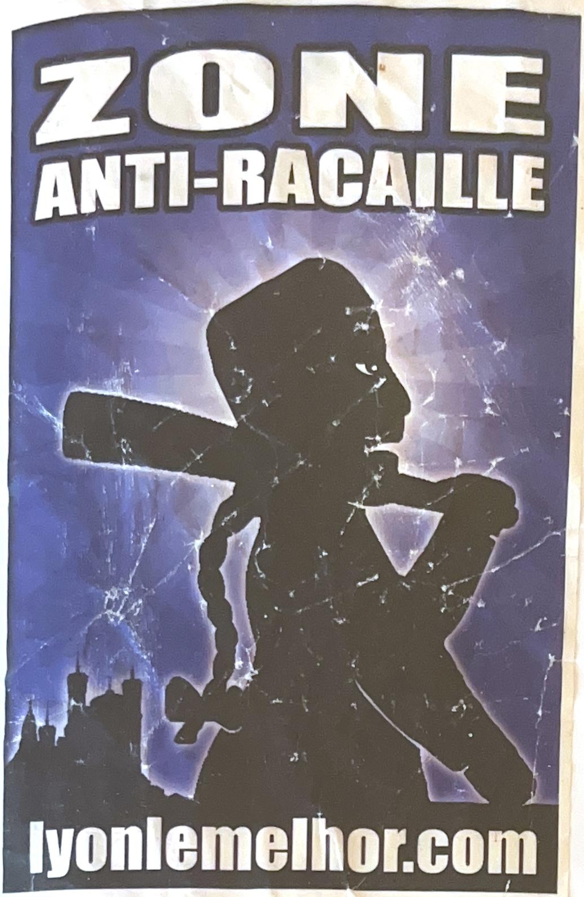
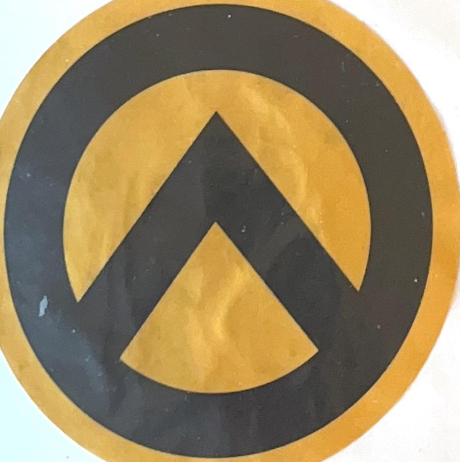

GUD Rat
The black rat and Celtic cross of the Groupe Union Défense, a French far-right student group.
Student groups
Read
Latest
Scroll sideways, or hover a card to read more.
The black rat and Celtic cross of the Groupe Union Défense, a French far-right student group.

Crusader imagery and archaic lettering from La Dissidence Française.

Vigilante imagery over a Lyon skyline, aimed at intimidating a neighbourhood.

The yellow-and-black emblem of the identitarian movement, Génération Identitaire.
About
Every entry follows the same three steps.
Each sticker is photographed where it was found, with the date and the area noted.
We trace the symbols, slogans and web addresses back to the group that produced them.
The article explains what the sticker means, so anyone can recognise it next time.